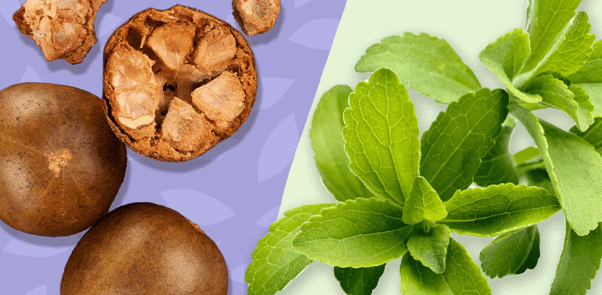
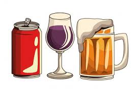
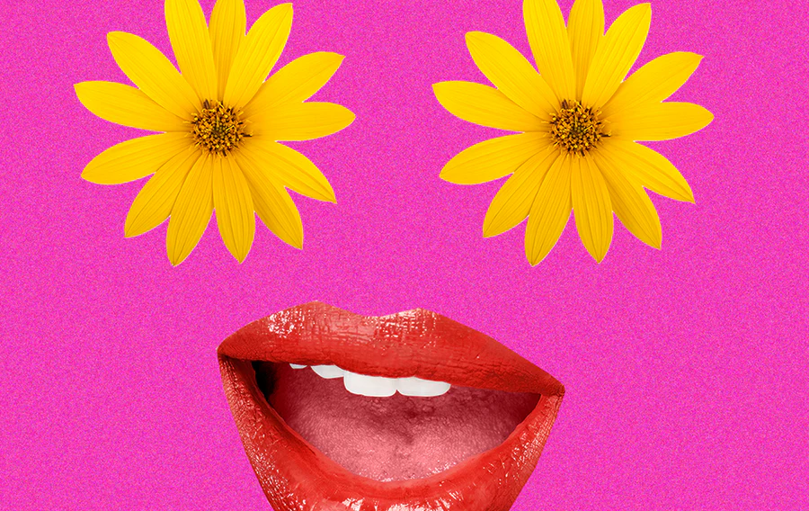
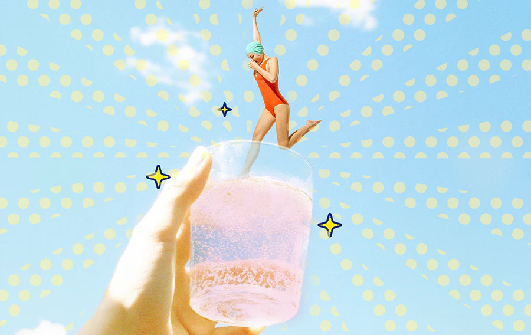
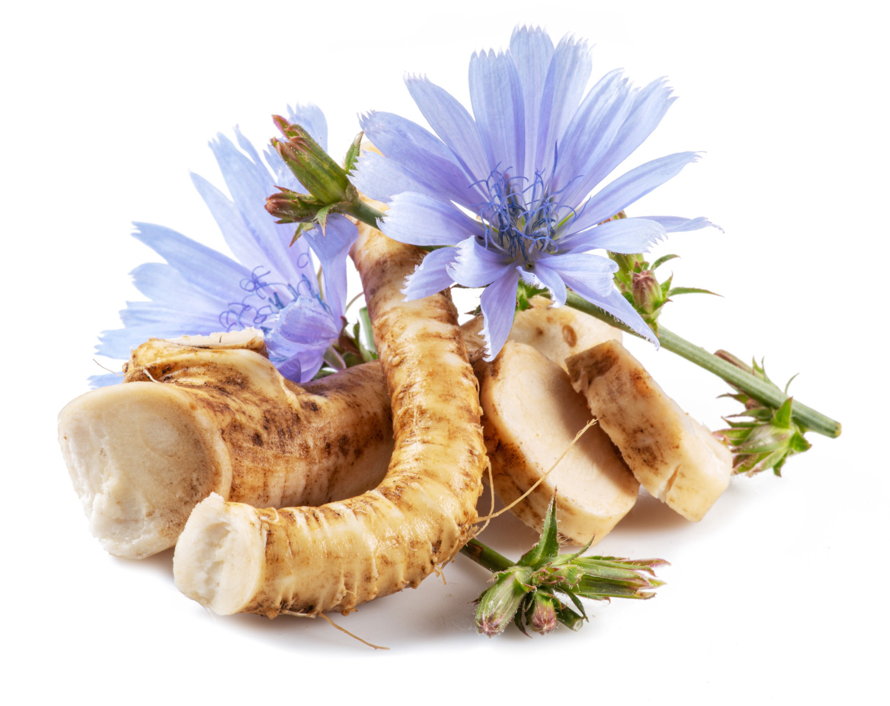
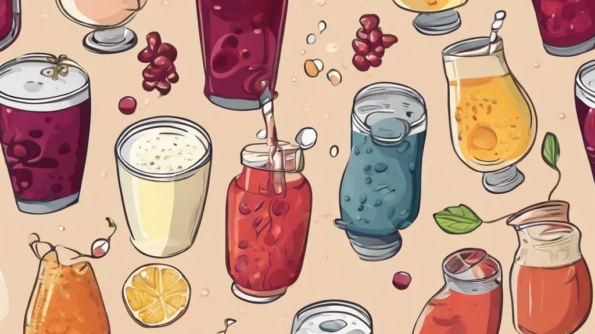
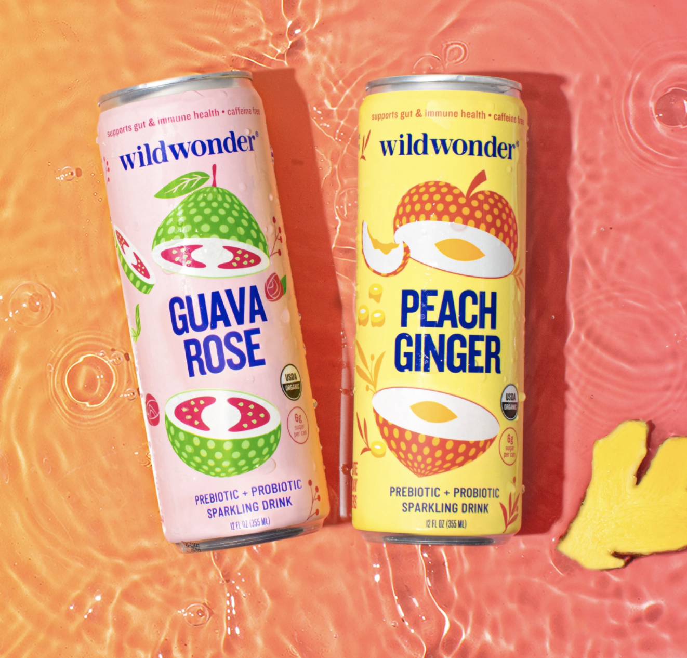
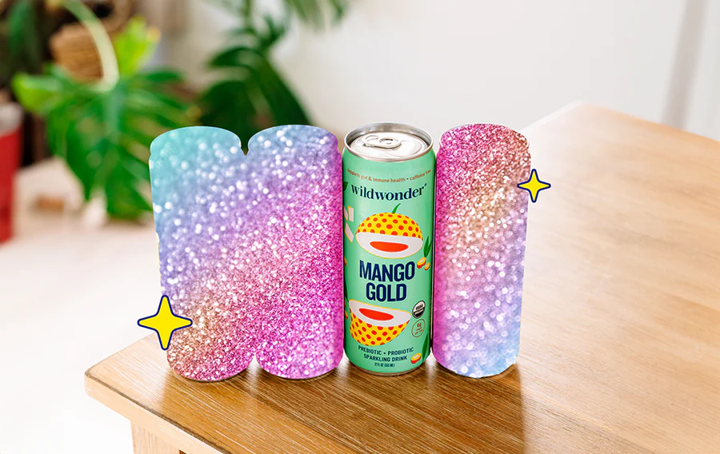
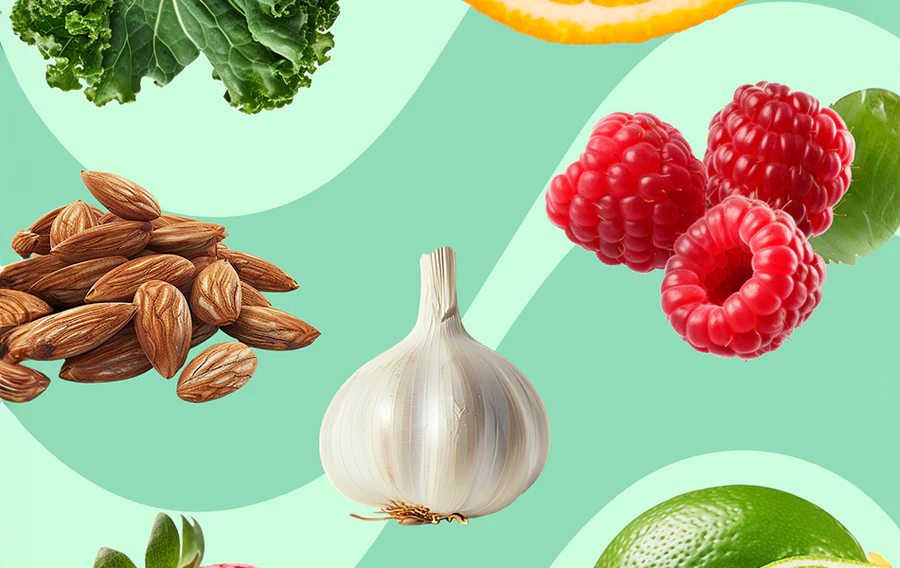

Gut Health and Wellness Tips from Wildwonder
Your Go-To Source for Gut Health Advice
Gut Wellness: Your Guide to a Healthier, Happier Life

Monk Fruit vs. Stevia: Which Is Better?
Explore the differences between monk fruit and stevia for a healthier lifestyle.
Read More

Soda vs. Beer: The Health Debate
Understand the impacts of soda and beer on your health and gut.
Read More



The Gut-Boosting Benefits of Chicory Root Fiber
Learn why chicory root fiber is a gut health hero.
Read More

12 of the Best Probiotic Drinks for Gut Health
Discover the best drinks, including Wildwonder, for gut health.
Read More

Prebiotic Soda: What Is It and Is It Good?
Learn the benefits of prebiotic sodas for digestive health.
Read More

Wildwonder vs. Diet Soda: Why We're Better
See why Wildwonder beats diet soda for taste and health.
Read More

The Surprising Link Between Gut Health and Mental Well-being
Explore the gut-brain connection and its effect on mental health.
Read More